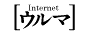

移住希望者必見のページ
|  | 「沖縄に住む」は移住希望者必読のコラムです。 | |
| 沖縄に移住して活躍されているナイチャー小林さんのページ。 | ||
| 島旅旅行記データベースは圧巻。 |
||
| 沖縄ファンクラブ | 「沖縄移住希望者懇親会」を開催するほど気合が入ってます。 |
|
| 「沖縄移住者への道」参考になります。 | ||
| 沖縄へ嫁として嫁いだ日記が面白いです。 |
沖縄に「移住しちゃった。。。」 |
|
| 「沖縄移住計画」進行中。 | ||
| 特集・沖縄で暮らす | タウン誌「うるま」の記事です。 |
|
| 沖縄は日本のシニアに何ができるのか？ | シニアの移住についてのお話ですが、非常に興味深い内容です。 |
|
| しまんちゅーへの道 | 八重山に住むための判断テストです。 |
|
| 同時代社 | 沖縄移住のバイブル「沖縄で暮らす!!」を発行されています。 |
| 住宅ＪＯＨＯ | 住宅情報、沖縄の住宅情報誌の一つです。 | |
| やどかり沖縄 | 住宅情報。 | |
| フジネット | 住宅情報。 |
| 情報の充実したサイト | ||
| Okinawa JOHO Web | タウン情報誌「おきなわJOHO」を発行しています。 | |
| Nakaべ〜's ＢＵＳページ |
沖縄のバス情報です。 |
|
| はいさい うちなあぐち世界んかい めんそうれえ! |
うちなーぐち(沖縄方言)も勉強しましょう。 |
|
| THE LOVE MAP SHOP'S 私の友達がやっています。私と同じ沖縄病患者です。 とても楽しいページですよ。 |
||
| 沖縄在住の探検隊による美味しいもの情報満載！ |
||
| 沖縄県中小企業団体中央会 |
| Okinawa Soho's Net Wａ! |
沖縄でＳＯＨＯの輪！ 色々な特技を持った人達の集団です。 とても心強いです。 |